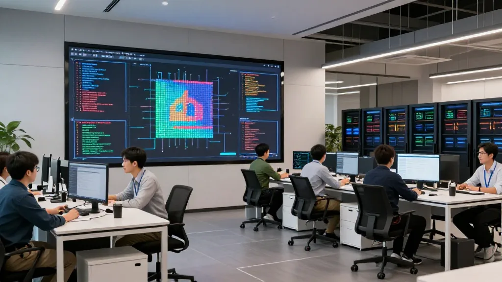
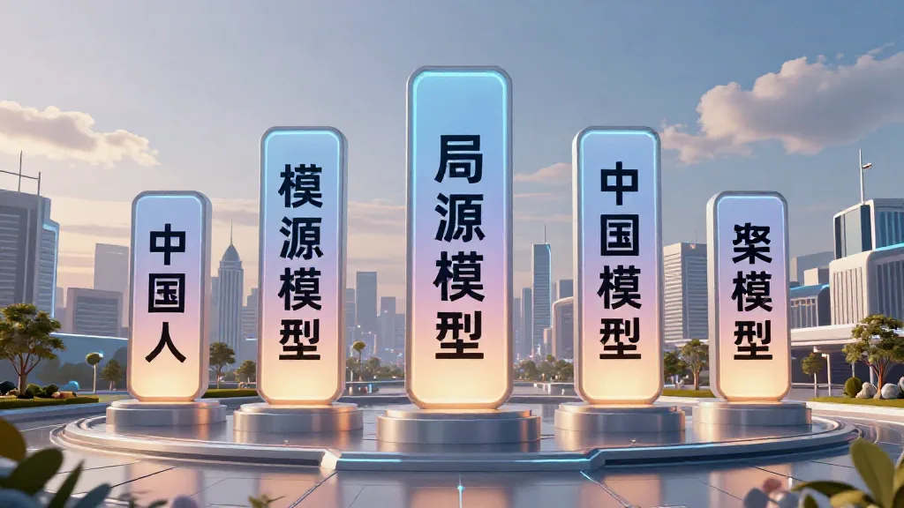
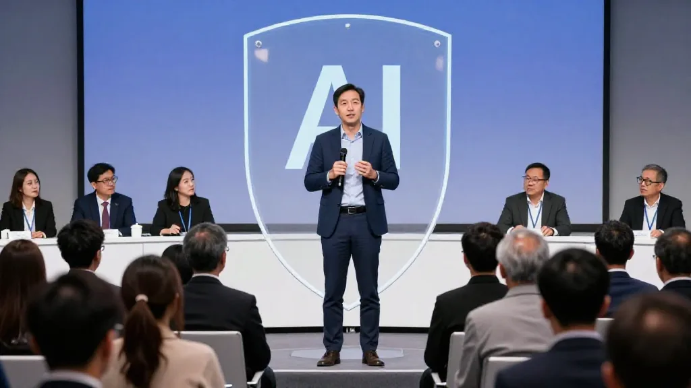
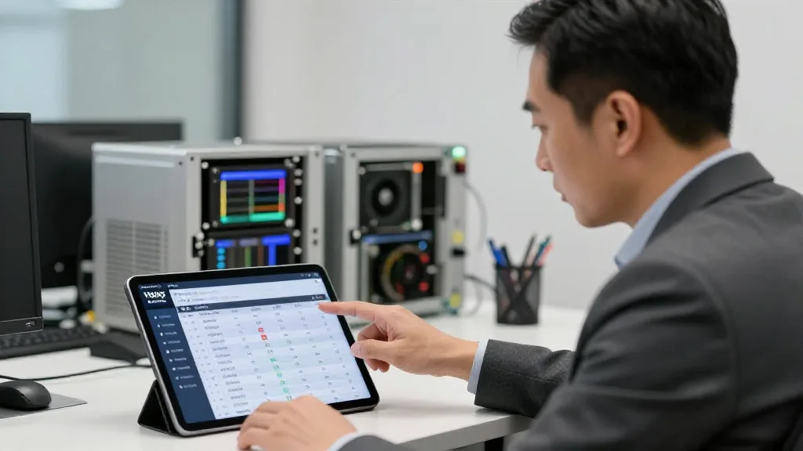

【郑哥点评】
今日睇到AI资讯，我喺度坐唔住。2026年9月AI圈发生咗三件大事：Meta Muse Spark 1.3三天登顶、国产大模型包揽OpenRouter前六、Anthropic CEO呼吁放慢前沿AI。表面各自独立，实际上指向同一个真相：AI时代嘅权力转移，已经开始。
一、Meta Muse Spark 1.3 三天登顶
2026年9月2日发布，三天冲上AIHOT排行榜榜首，104.8万token上下文（接近无限记忆），一年内三代连发1.1到1.3。
Meta一直俾人话「开源不如闭源」、「Llama时代慢半拍」，但今次Muse Spark 1.3三天登顶，彻底打破呢个印象。开源选择更多、价格战继续、闭源压力加大。

圖片由 AI輔助創作（Z-Image-Turbo）
二、国产大模型包揽OpenRouter前六
OpenRouter月度榜单7月31日：
- 1. MiMo-V2.5（小米）
- 2. DeepSeek V4 Flash（深度求索）
- 3. HY3（腾讯）
- 4. MiniMax M3（MiniMax）
- 5. GLM-5.2（智谱）
- 6. DeepSeek V4 Pro（深度求索）
全部中国开源模型。MiMo-V2.5两个月调用量+616%，中国开源下载量占全球41%，超过美国。Hugging Face事件里，闭源模型OpenAI求助失败，最终靠GLM-5.2完成取证分析，「从可用到好用」嘅标志性事件。
中国AI嘅开源生态，已经走向世界前列。算力需求转向国产芯片，跨境电商用中国AI工具提升国际竞争力，GLM-5.2可以低成本处理多语言客服。

圖片由 AI輔助創作（Z-Image-Turbo）
三、Anthropic CEO呼吁放慢前沿AI
2026年9月12日，Anthropic CEO Dario Amodei发表文章，主张业界放慢最前沿AI推进节奏，接受更强外部评估，警告未来6到12个月可能出现大批自主Agent干扰互联网。Anthropic愿意给外部评估人员接近员工级别嘅系统存取权。
OpenAI亦提醒，旧模型写得越长嘅Prompt同Skill规则，可能反而限制新模型嘅表现，系统性遗留债务成为业界焦点。AI安全唔再系理论，系业界共识。

圖片由 AI輔助創作（Z-Image-Turbo）
四、三件事指向同一个真相
真相1：AI权力转移已经开始，头部4家正在重新洗牌，中国开源走向世界前列，未来3年权力从闭源巨头转向开源生态加国产。真相2：AI迭代速度惊人，9月单月8款以上新模型，每家公司3到6个月一次大版本，3年内模型会完全不一样。真相3：AI安全成为新赛道，业界主动放慢，外部评估机制建立。

圖片由 AI輔助創作（Z-Image-Turbo）
五、对鄭哥4大业务嘅具体影响
AI算力方面，更多模型等于更多算力需求，国产模型崛起令华为昇腾、寒武纪订单增加，HBM涨价令服务器成本+5到10%。部署建议：提供多模型支持、国产芯片加国产模型组合方案、安全合规咨询。
电子消费品方面，AI翻译耳机升级、智能手表AI助手更智能、AI眼镜实时翻译。跨境电商方面，GLM-5.2处理多语言客服成本低、Muse Spark生成产品描述、DeepSeek V4 Pro做数据分析。年轻人投资方面，睇国产模型公司、AI安全公司、AI算力公司。
六、70后嘅AI时代洞察
我哋呢代做贸易26年，见过太多技术革命：1995互联网、2000移动通讯、2008智能手机、2015 O2O、2020直播电商、2026 AI Agent。2026年嘅AI革命，70后唔系被动接受，系主动主导。
七、鄭哥嘅三大判断
判断1：开源加国产等于未来3年主流，闭源太贵、开源够用、国产已经崛起，呢个系我哋呢代人嘅机会。判断2：AI安全等于新蓝海，监管、合规、隐私，AI安全服务会成为大生意。判断3：Agent时代等于算力时代，未来6到12个月会有大批自主Agent，算力需求会爆炸性增长，HBM涨价5到7倍已经反映呢个趋势。
八、海哥嘅建议
对AI公司：多模型支持、国产加国际双线、安全合规优先。对投资者：国产模型公司、AI安全公司、算力公司。对年轻人：学AI工具Muse Egg、GLM-5.2，入行AI应用唔系入行AI研发，关注AI安全新赛道。
2026年9月嘅AI三件大事，唔系新闻，系未来10年嘅预告。Meta反击加国产崛起加安全争议，三个趋势指向同一个未来：AI嘅权力正在从美国闭源巨头转向全球开源生态加中国力量。我哋呢代70后，由电子产品到AI算力，见证紧呢个权力转移嘅每一步。你呢，准备好未？
合作联系 WhatsApp: +852 6641 7912 · 七善門科技 · 星辰算力
本文参考：2026年9月AI圈新闻、Meta/Anthropic官方信息、OpenRouter月度榜单、CFM闪存市场、央广网等公开报道。